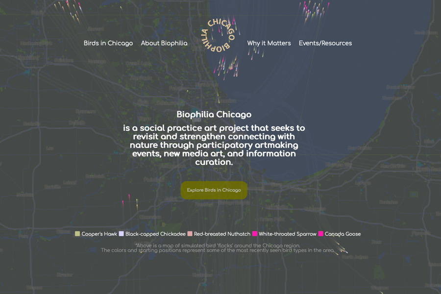

Explore birds in Chicago
web development
Commisioned by Alan Perry and Rossy Natale
Biophilia Chicago is an ongoing project that builds on this love of nature by creating work and hosting events that aims to revitalize human connections with the outdoors in light of the growing threats of climate change and other anthropogenic stressors.
The project started as a collaboration between Alan Perry, an artist, and Rossy Natale, a biologist.
This project is funed by Arts, Science + Culture Initiative and supprted by Field Museum of Natural History for access to specimens used in this project.
As the web develpor, I was in charge of designing engaging and responsive pages, integrating and visualizing real-time and historical data from eBird API into website.

Interactive map
This interactive map contains 17 bird species: some rare in the Chicagoland area, some common. For each specie, user can see a photo and
hear the sound of their calls. For some of these species, user can also see and manipulate three dimensional models of their skulls.
All images and sounds were from eBird database, contributors are given full credits on each image or sound. 3D models were collected from the Field Museum of Natural History in Chicago, IL.
Data visualization
To help understand how climate change may alter Earth, scientists use models that run under different ‘scenarios’ depending on how
much the causes of climate change are mitigated by humans. Many biologists will then use these predictions to understand how the suitable habitat for a given species may shift in location,
grow, or shrink.
This visualization graph is based on the ‘3 degree’ scenario which hypothesizes if the average temperature
on Earth rises by 3 degrees, what will things like regional
temperatures, precipitation, and weather events look like?